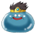
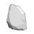
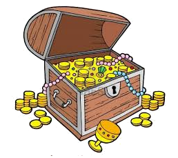
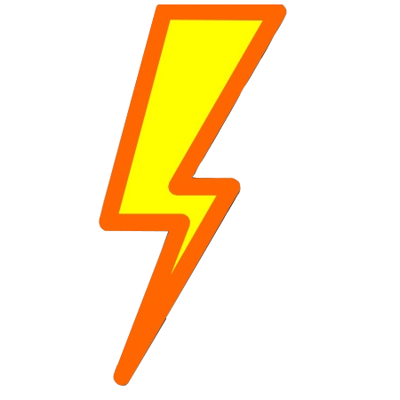

To win the game, the hero must collect all the Royal Jewels.
 Hero
The player's alter ego with the goal to collect all the Royal Jewels.
Whiffles (Wh)
In game currency and can be use to buy tools/items.
Grovnick
One square tile of the island that make up the map.
Movement
Use the arrow keys to move one grovnick.
If the hero "jumps" of the edge of the island, they are teleported to opposite side of the island.
Every attept at moving cost energy.
Cost 1 energy to move.
 Bog
Bog
Cost 2 energy to move.
Water
Requires a boat to travel on water.
Fog
Hero can only see 1 grovnick in all directions.
If the hero has binoculars they can see 2 grovnick is all directions.
Hides other terrain the hero has not seen.
Moving and removing obstacles requres energy.
If you run out of energy the game ends.
Trees cost 10 energy to cut down without an axe and 6 energy with an axe.
 Boulder
Boulders cost 16 energy to break without an Pickaxe and 12 with an Pickaxe.
Blackberry Bushes
Blackberry bushes cost 4 energy to remove without a Weed Wacker, 2 energy with a Weed Wacker.
Use to cut down trees for less energy.
Cost 30Wh, if found.
Weed Wacker
Use to remove blackberry bushes using less energy.
Cost 35Wh, if found.
 Pickaxe
Pickaxe
Use to remove boulders using less energy.
Cost 25Wh, if found.
Binoculars
Allow the hero to 2 grovnick is all direction.
Cost 50Wh, if found.
The hero will win the game if these are found.
 Treasure Chests
Treasure chest contains 100 Whiffles.
Mimic treasure chest will take all of the hero Whiffles.
Normal and mimic tresure chests look the same.
 Power Bars
Can be used to restore energy.
Cost 1 Wh each.